Manual Técnico: Wallet BackOffice
Ecosistema Administrativo
Este documento detalla el funcionamiento del Módulo de Administración de Dinero Electrónico, el cual forma parte integral de la plataforma corporativa denominada BackOffice. El BackOffice es un sistema centralizado que alberga múltiples módulos operativos de la empresa, permitiendo una gestión unificada y segura de todos los procesos financieros y administrativos.
Objetivo General y Descripción
Descripción: El Wallet BackOffice es el centro de control diseñado para centralizar y asegurar la gestión operativa de la billetera digital corporativa, garantizando que el flujo de capital sea transparente y auditable.
Funcionalidades Clave: Gestión de identidad (KYC), control dual de solicitudes, vinculación crediticia y monitoreo de transacciones en tiempo real.
Glosario de Términos
- BackOffice
- Plataforma administrativa interna para la gestión de servicios corporativos.
- RBAC
- Control de Acceso Basado en Roles.
- Control Dual
- Principio donde una operación requiere revisión y aprobación por perfiles distintos.
Guía de Inicio Rápido
Ruta Crítica: Recepción de Solicitud → Revisión Contable (Contador) → Aprobación Final (Gerencia) → Fondos Disponibles.
Diagrama de Flujo General
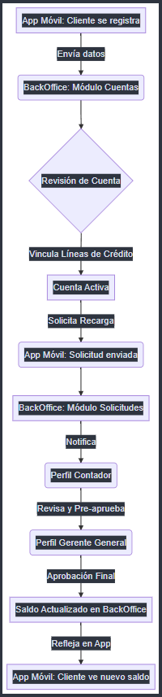
¿Qué sucede?: Representación del viaje del dinero desde el Onboarding hasta la Confirmación.
Utilidad: Comprensión visual inmediata de la cadena de mando y dependencias entre perfiles.
Módulo de Seguridad y Acceso
01. Control de Acceso
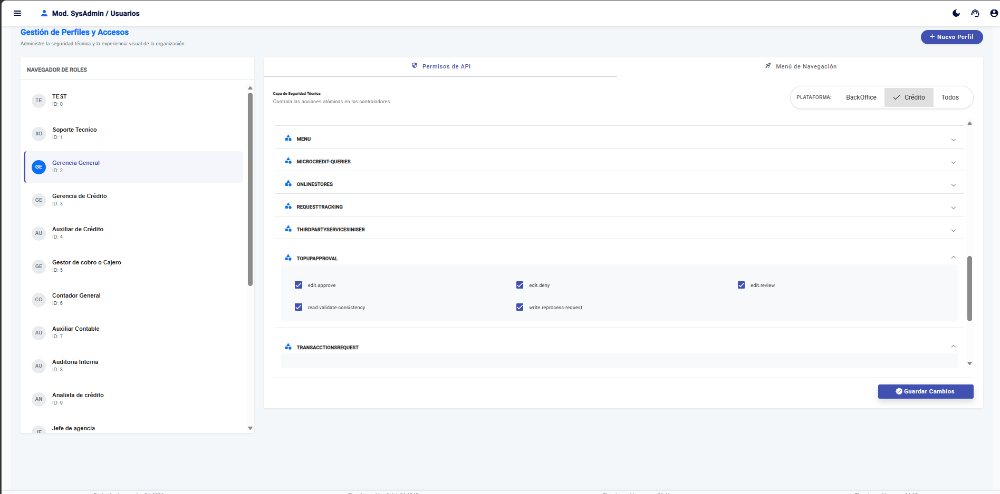
¿Qué sucede?: El sistema solicita credenciales únicas y verifica la identidad del usuario.
Utilidad: Previene accesos no autorizados y garantiza la trazabilidad de cada acción.
02. Configuración de Perfiles
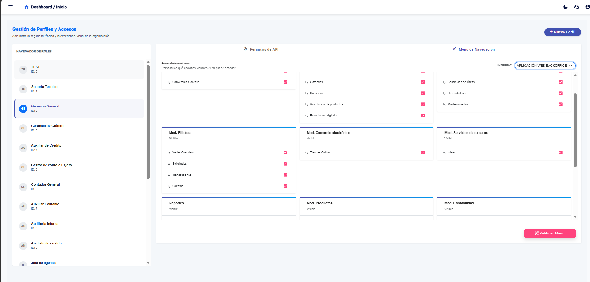
¿Qué sucede?: Los administradores asignan capacidades específicas a cada rol.
Utilidad: Implementa la seguridad RBAC para mitigar riesgos de fraude o errores humanos.
03. Opciones de Menú Permitidas
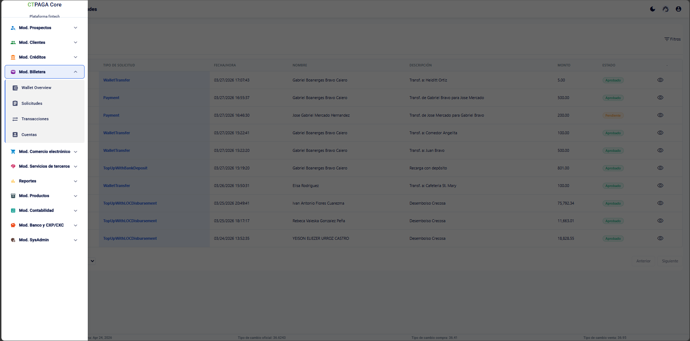
¿Qué sucede?: El sistema muestra únicamente los módulos para los cuales el usuario tiene permiso.
Utilidad: Mantiene la interfaz limpia y oculta secciones sensibles a perfiles no autorizados.
Módulo de Administración de Billetera
3.1 Sección de Cuentas
01. Listado de Cuentas
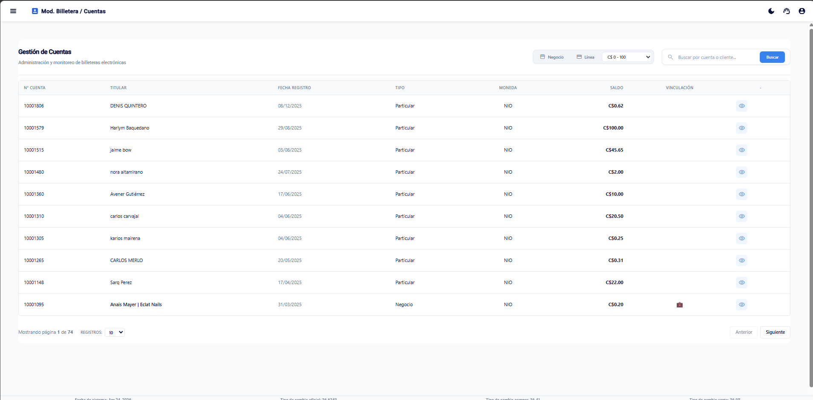
¿Qué sucede?: Se muestra la base de datos de todos los clientes registrados.
Utilidad: Herramienta principal para búsqueda y monitoreo masivo de usuarios.
02. Detalle del Perfil
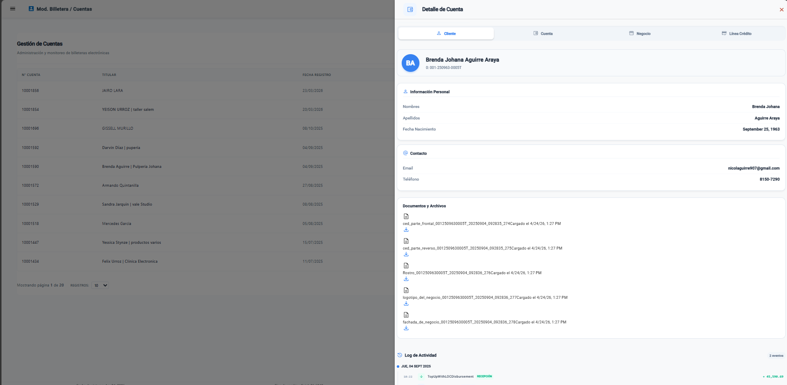
¿Qué sucede?: Se despliega la información personal y legal del cliente.
Utilidad: Permite el cumplimiento de normativas KYC (Conoce a tu Cliente).
03. Saldo de Dinero Electrónico
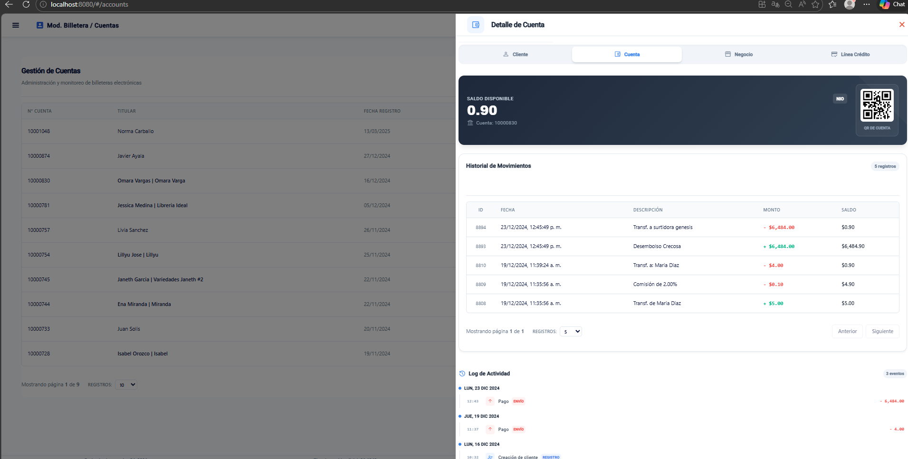
¿Qué sucede?: Se visualiza el balance contable de la billetera del cliente.
Utilidad: Proporciona transparencia total sobre los fondos y facilita conciliaciones.
04. Verificación de Negocio
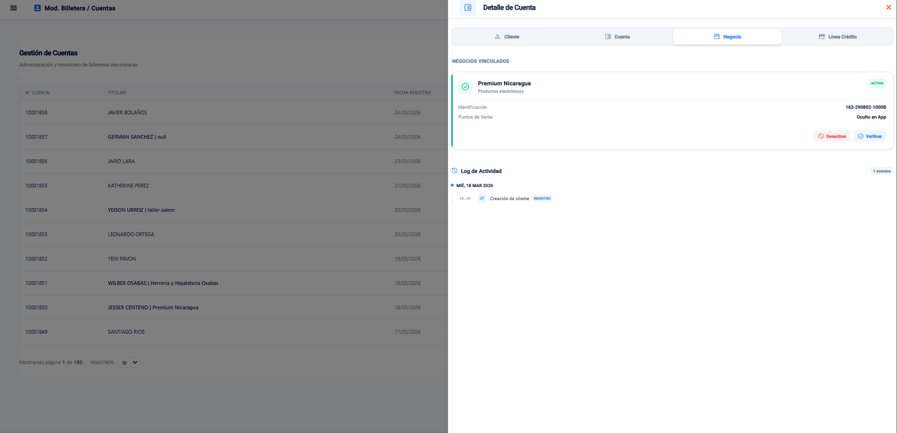
¿Qué sucede?: Se revisan los datos comerciales de establecimientos afiliados.
Utilidad: Previene el registro de negocios fraudulentos en la red.
05. Línea de Crédito Vinculada
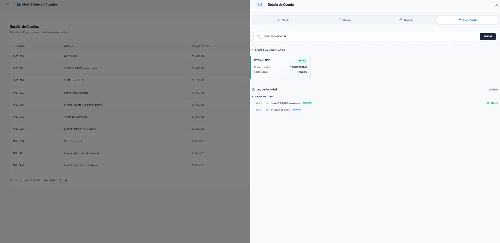
¿Qué sucede?: Se vincula o desvincula al cliente una línea de crédito en su App (según aplique).
Utilidad: Habilita al cliente para comprar en afiliados o pedir desembolsos a su billetera.
3.2 Sección de Solicitudes
01. Lista de Solicitudes
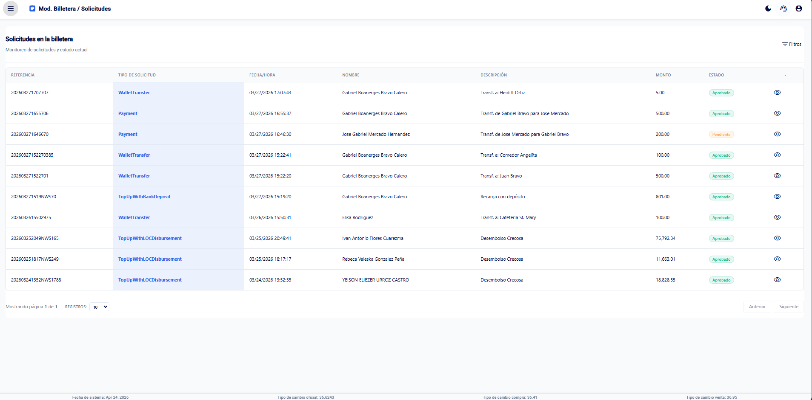
¿Qué sucede?: Se agrupan todas las peticiones de inyección de saldo entrantes.
Utilidad: Bandeja de entrada operativa que organiza el trabajo por prioridad.
02. Revisión del Contador
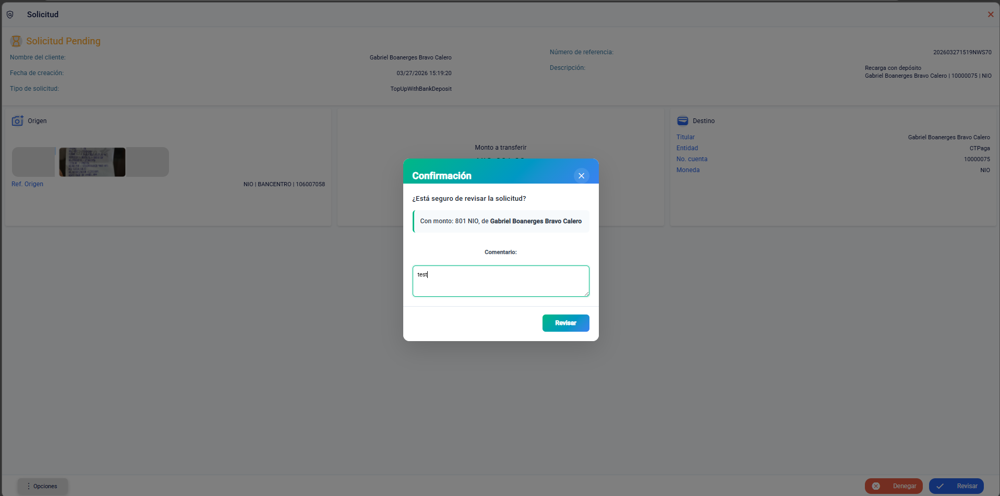
¿Qué sucede?: El Contador valida que el depósito bancario coincida con el soporte digital.
Utilidad: Asegura que el dinero virtual tenga respaldo bancario real.
03. Aprobación del Gerente
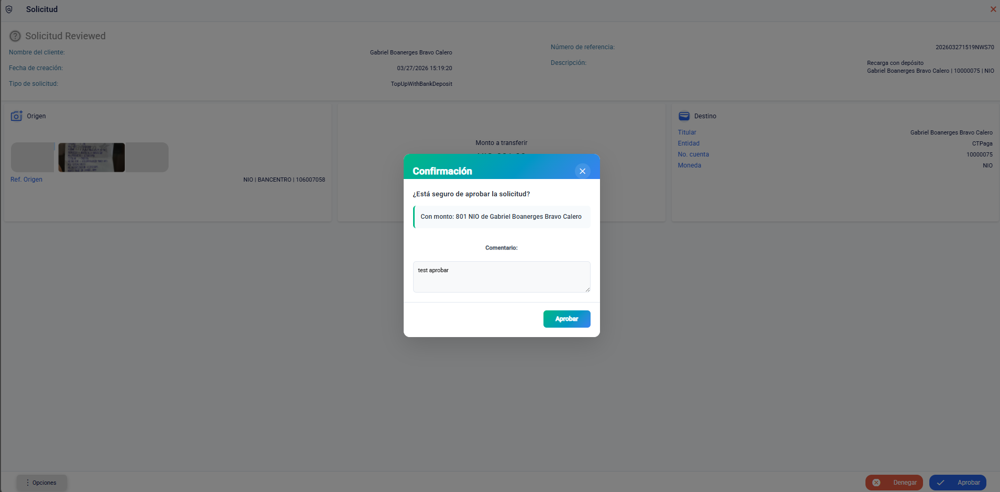
¿Qué sucede?: La Gerencia General otorga el visto bueno final a la operación.
Utilidad: Aplica el Control Dual para autorizar el flujo final de fondos.
04. Solicitud Aprobada
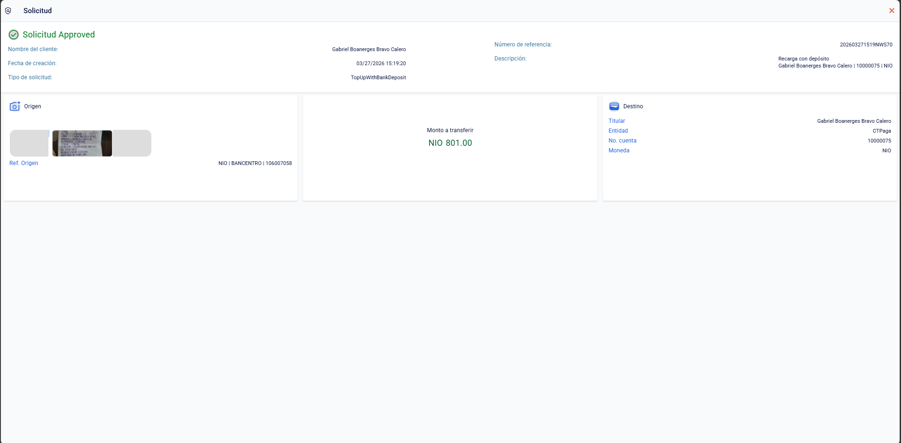
¿Qué sucede?: Se cierra el caso y se envía notificación de saldo exitoso al cliente.
Utilidad: Finaliza el ciclo de vida de la solicitud con feedback inmediato.
3.3 Sección de Monitoreo
01. Transacciones Recientes
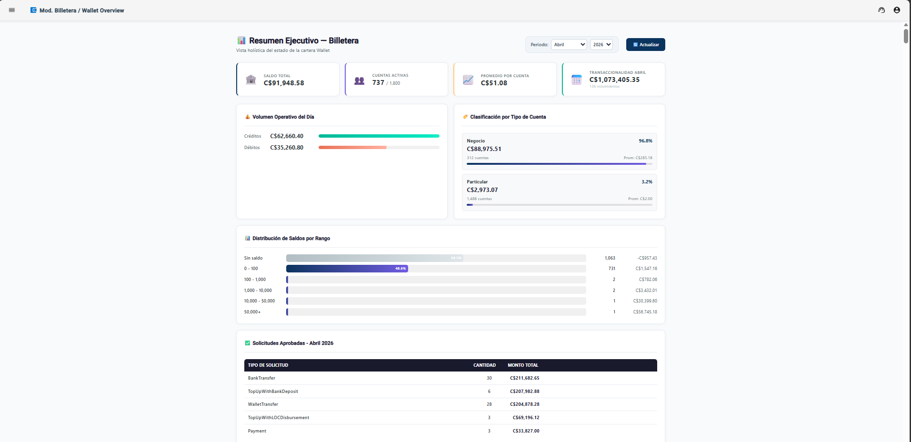
¿Qué sucede?: Se despliega el flujo de movimientos de la red en tiempo real.
Utilidad: Proporciona conciencia situacional sobre la actividad del sistema.
02. Comprobantes de Transacciones
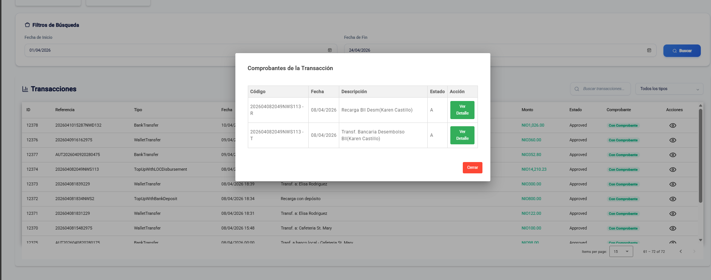
¿Qué sucede?: Permite la descarga de soportes digitales de cualquier transacción.
Utilidad: Herramienta clave para servicio al cliente y auditorías externas.